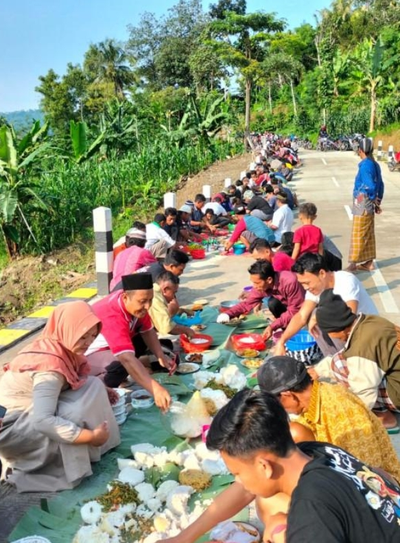
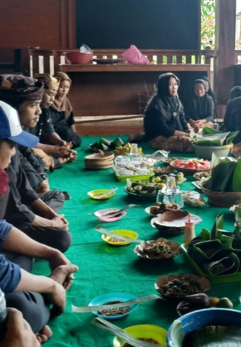
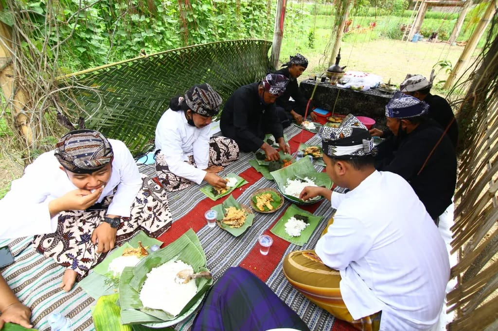
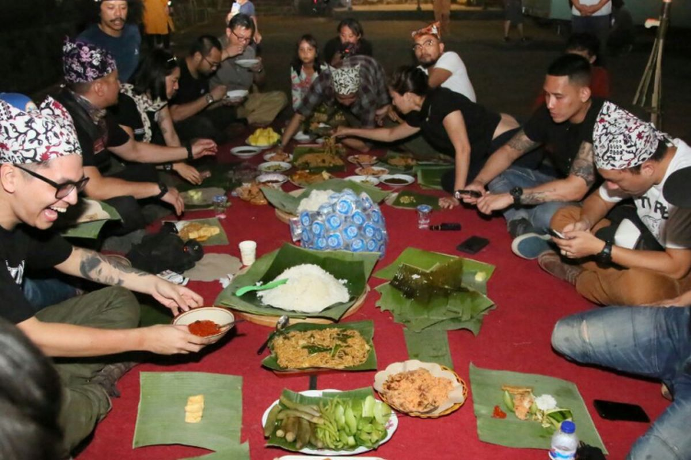
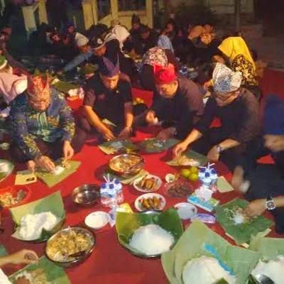

📜 Sejarah
Selametan Osing merupakan tradisi turun-temurun masyarakat Suku Osing, yaitu suku asli Banyuwangi. Tradisi ini telah diwariskan dari generasi ke generasi sebagai bentuk rasa syukur kepada Tuhan atas berbagai nikmat kehidupan.
Selain itu, selametan juga menjadi sarana untuk memohon keselamatan, kesehatan, dan keberkahan bagi keluarga maupun masyarakat. Hingga saat ini, tradisi selametan masih dilestarikan dan sering dilakukan dalam berbagai acara penting, seperti pernikahan, kelahiran, panen, pindah rumah, maupun ritual adat desa.
💭 Makna Filosofis
Bagi masyarakat Osing, selametan bukan sekadar acara makan bersama. Tradisi ini memiliki makna yang mendalam:
🙏 Ungkapan Rasa Syukur
Selametan menjadi wujud terima kasih kepada Tuhan atas segala nikmat yang diberikan, baik berupa kesehatan, rezeki, maupun keselamatan.
🛡️ Permohonan Keselamatan
Tradisi ini menjadi sarana memohon keselamatan dan keberkahan hidup agar selalu dilindungi dari berbagai marabahaya.
🏛️ Penghormatan Leluhur
Selametan juga menjadi bentuk penghormatan terhadap leluhur dan warisan budaya yang telah diwariskan secara turun-temurun.
🤝 Simbol Persatuan
Tradisi ini mencerminkan persatuan, kebersamaan, dan gotong royong masyarakat Osing dalam menjalani kehidupan.
Tradisi ini mengajarkan bahwa manusia harus hidup harmonis dengan sesama, alam, dan Sang Pencipta.
Prosesi Pelaksanaan
Secara umum, pelaksanaan selametan dilakukan melalui beberapa tahapan:
1. Persiapan Hidangan
Menyiapkan makanan, hidangan tradisional, dan perlengkapan acara. Persiapan ini biasanya dilakukan secara gotong royong oleh warga sekitar.
2. Berkumpul Bersama
Warga atau keluarga berkumpul di lokasi pelaksanaan, baik di rumah, balai desa, maupun tempat lain yang telah disepakati.
3. Doa Bersama
Tokoh adat atau sesepuh memimpin doa bersama. Doa dipanjatkan sebagai bentuk rasa syukur dan permohonan keselamatan.
4. Makan Bersama
Setelah doa selesai, makanan dinikmati bersama sebagai simbol persaudaraan dan kebersamaan.
Walaupun terdapat sedikit perbedaan di setiap daerah, inti dari selametan tetap sama, yaitu doa, syukur, dan kebersamaan.
✨ Fakta Menarik
Masih Aktif Dilaksanakan
Tradisi selametan masih aktif dilakukan oleh masyarakat Osing hingga sekarang dan menjadi bagian penting dari kehidupan sehari-hari.
Hidangan Khas Pecel Pitik
Hidangan khas yang sering hadir dalam selametan adalah Pecel Pitik, makanan tradisional khas Banyuwangi yang terbuat dari ayam kampung dengan bumbu kelapa parut.
Gotong Royong
Persiapan selametan biasanya dilakukan secara gotong royong oleh warga sekitar, mencerminkan semangat kebersamaan yang kuat.
Penjaga Identitas Budaya
Tradisi ini menjadi salah satu cara masyarakat Osing menjaga identitas budaya mereka di tengah perkembangan zaman.
Bagian dari Tradisi Besar
Selametan sering menjadi bagian dari berbagai tradisi besar masyarakat Osing, seperti acara adat desa dan perayaan budaya.
📸 Galeri




